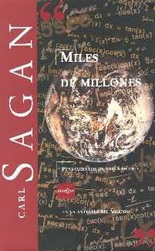

Miles de millones
Reseña por Jorge I. Zuluaga

Ver detalles · Ver reseña en GoodReads (necesita cuenta)
Es obvio que este no es un libro autobiográfico (seguro lo saben si leyeron la descripción), pero al tratarse de los últimos ensayos del científico que inspiró a una o dos generaciones a mirar con una sensibilidad mucho más amplia al universo afuera y alrededor nuestro, no puedes dejar de pensar en el libro como una especie de despedida. Cada ensayo podría subtitularse "lo último que Sagan escribió sobre...".
Este es el segundo libro que leo completo de Sagan, quien ha sido para mí, desde que tengo uso de razón, un ídolo intelectual, profesional y humano. Pero no me culpen: Sagan es de esos autores que todos decimos conocer, pero que en realidad no hemos leído lo suficiente.
Lo mejor del libro: la diversidad de temas y de aproximaciones, uno de los más queridos atributos de Sagan.
En "Miles de millones" encontrarás desde pequeños ensayos anecdóticos ("Miles de millones") o didácticos ("El ajedrez persa", "El mundo que llegó por correo", "Las reglas del juego"), pasando por una mirada al futuro de las grandes preguntas de la astronomía, la búsqueda de vida en el universo o
la exploración del sistema solar ("Cuatro preguntas cósmicas", "Tantos soles, tantos mundos"); hasta llegar a los temas que más preocuparon a Sagan durante su vida: la amenaza de un enfrentamiento nuclear suicida ("El enemigo común"), la degradación del medio ambiente ("Falta un pedazo de cielo", "Emboscada: el calentamiento del mundo", "Huir de la emboscada") y la relación de la ciencia y la religión ("Religión y ciencia, una alianza").
De todos los ensayos, tres me impactaron particularmente: "El mundo que llegó por correo", que creo es un ensayo que deberían leer todos los maestros de la educación básica con sus estudiantes; una verdadera lección sobre la fragilidad del planeta. "Religión y ciencia: una alianza", una aproximación espectacular a la relación entre la ciencia y la naturaleza, marcada históricamente por la religión, y de la manera como ambas, ciencia y religión, podrían cooperar para hallar una salida a los problemas que enfrenta el planeta. Y finalmente, "Aborto: ¿es posible tomar al mismo tiempo partido por 'la vida' y 'la elección'?", un ensayo escrito a dos manos con la también increíble Ann Druyan (su segunda esposa), en el que aborda un tema muy "peliagudo" (pero todavía de gran actualidad) desde distintas perspectivas: científicas y morales. ¿Cuándo esperarías leer un artículo de Sagan con su esposa sobre el aborto? ¡Aquí lo tienen y es genial! (genialmente inconcluso).
Los últimos dos capítulos duelen.
El penúltimo ("En el valle de las sombras"), escrito por Sagan, describe el descubrimiento de su enfermedad en 1994 (una mielodisplasia, extraña enfermedad emparentada con el cáncer y que afectaba su sangre) y sus pensamientos y sentimientos frente a una condición sin reversa y que se lo llevó en tan solo dos años.
El último ("Epílogo"), y el más duro, cuenta la historia, desde la perspectiva de su esposa Ann Druyan, de esos últimos años o meses de Sagan, pero también del inicio de su espectacular relación.
Sagan ha muerto. ¡Larga vida a sus libros!